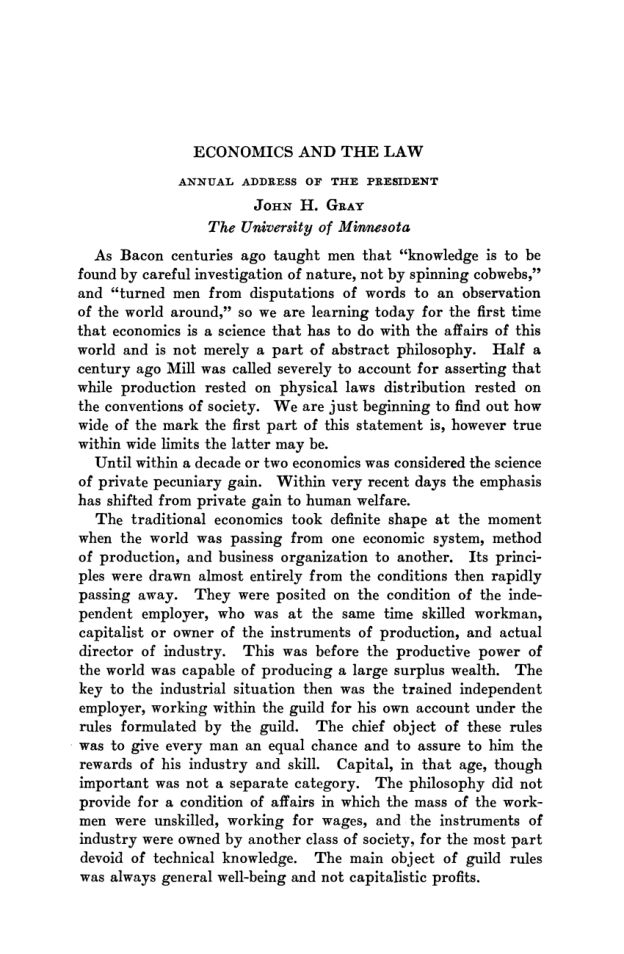

Gray, 1914: quem define o que é propriedade?
Leitura: 8 min
No discurso presidencial de 1914, Gray argumenta que a concorrência exige partes de poder equivalente e que, nos Estados Unidos, os tribunais tomaram para si a definição da propriedade, com risco de adiar mudanças que a opinião pública acabará impondo.


John H. Gray abre o discurso presidencial com Francis Bacon, que ensinou a buscar o conhecimento na observação da natureza, e não em disputas de palavras. A economia, diz ele, começa a aprender que trata dos negócios deste mundo e não é apenas um ramo da filosofia abstrata. Há meio século, John Stuart Mill fora criticado por dizer que a produção obedece a leis físicas e a distribuição, às convenções da sociedade. Gray acha que a primeira parte da frase estava mais errada do que se supunha.
O diagnóstico central do discurso é que a ênfase da economia passara do ganho privado para o bem-estar humano, mas o direito americano continuava preso à doutrina anterior. Gray, da University of Minnesota, fala em Princeton, em 28 de dezembro de 1914, na mesma sessão em que falaram os presidentes das associações de estatística e de sociologia.
Por que a concorrência deixou de proteger?
Para Gray, a economia tradicional ganhou forma no momento em que o mundo passava de um sistema de produção a outro, e tirou seus princípios das condições que desapareciam: o mestre independente, ao mesmo tempo trabalhador qualificado, dono dos instrumentos e diretor do trabalho, sob regras de guilda voltadas a dar a todos uma oportunidade igual. Essa filosofia não previa uma massa de assalariados sem qualificação trabalhando com instrumentos de outra classe.
O sistema atual, diz, repousa na concorrência, na propriedade privada e na liberdade de contrato, e em nenhum lugar estava tão entrincheirado no direito quanto nos Estados Unidos, por meio das constituições federal e estaduais. Mas a concorrência só funciona entre unidades de poder de barganha aproximadamente igual, o que exige não apenas liberdade pessoal, mas inteligência, informação e bem-estar econômico semelhantes. Quem aceita um contrato desvantajoso porque recusá-lo seria pior não é livre no sentido que a doutrina supõe.
Gray acrescenta um argumento sobre o capital fixo. A doutrina ricardiana supõe que o concorrente menos eficiente pode retirar capital e trabalho e aplicá-los em outra indústria. Se não puder fazer isso sem grande perda, a disputa entre duas fábricas não é concorrência no sentido de Ricardo e não tem as virtudes de regular a indústria e proteger o consumidor.
Como os tribunais passaram a definir a propriedade?
A resposta de Gray é histórica. Depois que o caso Dartmouth College transformou a carta de uma corporação em contrato protegido pela Constituição, os estados passaram a exigir, em novas cartas, a reserva do poder de alterá-las. Para as cartas antigas, os tribunais recorreram ao poder de polícia, tratado como parte implícita de todo contrato. Os tribunais de Nova York começaram, e a Suprema Corte os seguiu. O efeito, diz Gray, foi pôr nas mãos dos juízes, e não do legislativo, o poder de definir a política pública e, com ele, o conteúdo do contrato e da propriedade.
No caso da Charles River Bridge, de 1837, a Suprema Corte reorganizada sob Taney, diante de uma ponte concorrente que já se tornara gratuita, deu razão à opinião pública de Massachusetts. Para Gray, a decisão equivaleu a confiscar a propriedade da primeira companhia, por uma interpretação difícil de conciliar com o caso Dartmouth College.
A lista de reações continua. A decisão de que um cidadão podia processar um estado, em Chisholm v. Georgia, foi anulada por emenda constitucional em quatro anos. A introdução do poder de polícia pelos tribunais de Nova York levou o estado a tornar o judiciário eletivo em 1846. A decisão de Dred Scott foi apagada pela guerra. A declaração de inconstitucionalidade do imposto de renda resultou em nova emenda. Decisões como Lochner v. New York alimentavam a campanha pelo recall de juízes e de decisões judiciais.
Gray cita a observação de um advogado de que não se pode obrigar “um povo inteiro a ser moral contra a sua vontade”. (“a whole people to be moral against its will”)
Quem paga quando a propriedade deixa de ser aceita?
A doutrina constitucional manda expropriar com indenização plena quando o público deixa de aceitar uma forma de propriedade. Gray pergunta se isso é exequível. Onde a propriedade está dispersa, a comunidade pode aceitar pagar. Onde está concentrada e foi protegida por tempo suficiente para se tornar enorme, é improvável que o público aceite tributar-se na escala necessária. E os donos, quanto mais tempo passa, mais se convencem de que podem manter a posse pelos meios antigos.
Ele lembra os burgos de nomeação da Inglaterra em 1832, que Lord Eldon considerava propriedade tanto quanto os títulos de nobreza, e a escravidão americana depois de 1850, e cita a supressão dos mosteiros sob Henrique VIII e a reforma inglesa de 1832 como mudanças aceitas, a contragosto, por meios mais ou menos pacíficos. A conclusão é que a escolha real costuma ser entre uma modificação gradual dos direitos de propriedade sem indenização e o recurso à força.
Daí a crítica ao papel dos tribunais. A ideia de que eles são o órgão mais seguro porque estão fora da política é, para Gray, o contrário dos fatos: os tribunais conhecem menos a opinião pública e a boa política que as legislaturas, e entregar-lhes esse poder não impede a mudança, apenas a adia até que um acordo pacífico fique mais difícil. Ele contrasta o caso inglês: a Câmara dos Lordes perdeu poderes políticos, mas manteve os judiciais, porque seus juízes aplicam a lei e não tentam fazê-la.
O que muda quando a terra livre acaba?
A terra livre, segundo Gray, escondeu as tendências da economia americana: fixava um piso para o padrão de vida e permitia a muitos subir à classe dos proprietários. Com os recursos naturais apropriados e o poder de barganha do trabalhador individual enfraquecido, o sistema salarial apresenta outro quadro. Ele cita a entrada de mulheres no trabalho remunerado, cuja participação no total de ocupados passou de 13% em 1870 para 21,2% em 1910, e a queda dos salários reais desde 1906.
Gray registra a mudança de opinião entre os economistas: The Abolition of Poverty, de Hollander; Property and Contract, de Ely, para quem a propriedade é uma criação social; a afirmação de Taussig de que a propriedade privada está em julgamento; Wealth and Welfare, de Hobson; e The Instinct of Workmanship, de Veblen. A legislação sobre acidentes, indenização de trabalhadores, jornada e salário mínimo mostraria que, nesses temas, o trabalhador já não estava sujeito à concorrência individual.
Ele afirma que o sistema salarial baseado na barganha individual estava condenado e que a solução viria de muitas experiências, como cooperação, participação nos lucros e educação. Qualquer arranjo, diz, terá de dar ao trabalhador participação consciente na direção da indústria e, além de um salário mínimo garantido, uma parte dos lucros.
Para resumir o colapso do sistema antigo, Gray cita Walker: nas condições atuais, “o jogo é jogado com dados viciados”. (“the game is played with loaded dice”)
No fecho, Gray prevê que o poder político passará à maioria assalariada, educada por gerações de ação política, e que ela o usará por meios pacíficos. A regra que propõe é antiga e simples: ninguém tem o direito de adquirir, manter ou usar propriedade de modo prejudicial aos outros ou ao interesse permanente da sociedade. A novidade, diz, é deixar de supor que um uso é benéfico só porque está sob concorrência.
Na minha leitura
Na minha leitura, o discurso vale menos pelas previsões do que pela tese institucional. Gray trata os direitos de propriedade como variável de política, e não como dado, e pergunta qual órgão deve ajustá-los quando as condições mudam. Sua resposta, a legislatura, vem de uma análise dos custos de adiar a mudança, não de uma preferência abstrata.
O argumento sobre capital fixo também antecipa um ponto técnico importante: quando a saída do mercado é custosa, a concorrência entre poucos produtores não leva ao resultado do modelo. É a base econômica para tratar certos setores como serviços públicos, que Gray estende, com menos rigor, ao mercado de trabalho.
Glossário
- Poder de polícia
- poder do Estado de restringir propriedade e contrato em nome do interesse público.
- Caso Dartmouth College
- decisão de 1819 que tratou a carta de uma corporação como contrato protegido pela Constituição.
- Charles River Bridge
- caso de 1837 em que a Suprema Corte negou à concessionária de uma ponte o direito de impedir uma concorrente.
- Recall
- destituição de um funcionário eleito, ou revisão de uma decisão, por voto popular.
- Burgos de nomeação
- distritos eleitorais ingleses cujo representante era, na prática, escolhido por um proprietário, abolidos em 1832.
Fontes
- Economics and the Law: Annual Address of the President — John H. Gray, University of Minnesota; discurso presidencial (pp. 3–23). JSTOR · Internet Archive (PDF)
- Edição completa, com os demais artigos: Nº 135 do Arquivo.
Documento em domínio público (EUA, publicado antes de 1931), via JSTOR Early Journal Content e Internet Archive. Resumo e comentário do autor deste site, sem afiliação com a American Economic Association. Encontrou um erro? Escreva: a correção é publicada no próprio texto, com data.
↑ Nº 135 · Princeton, 1914: direito e propriedade, a bolsa em debate e o mercado Untermyer contra Emery, 1914: a bolsa de Nova York deve ser regulada? →